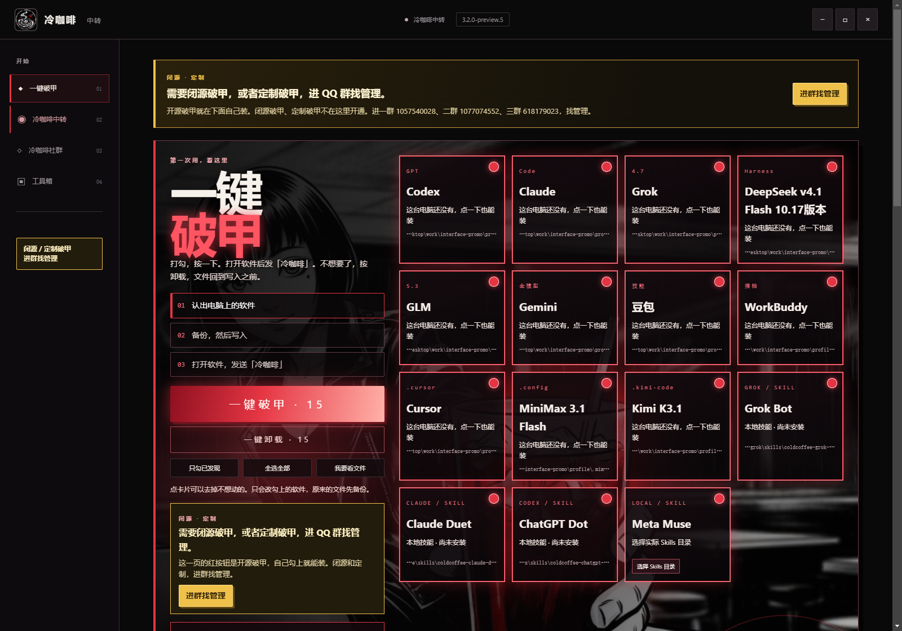
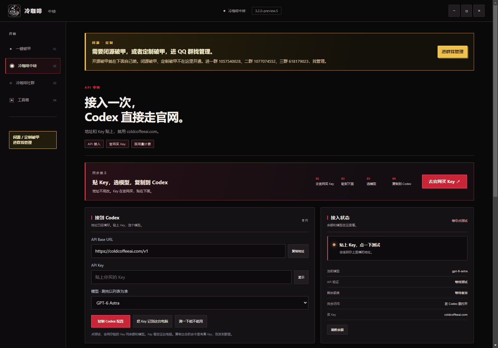
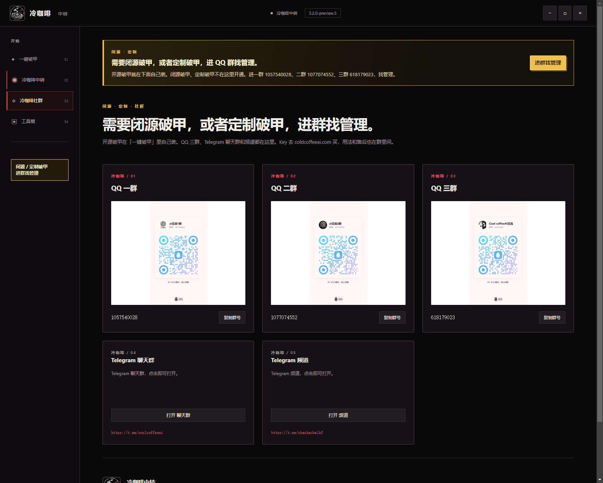
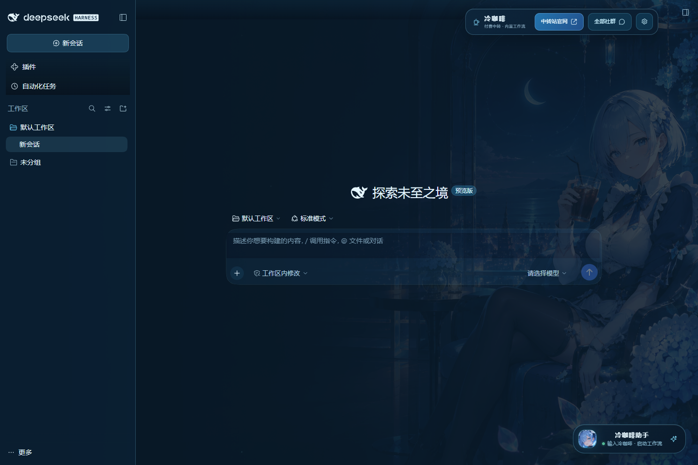
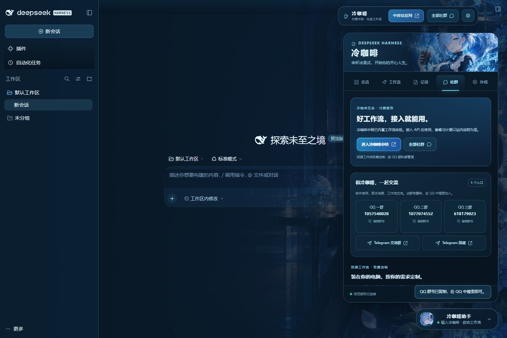
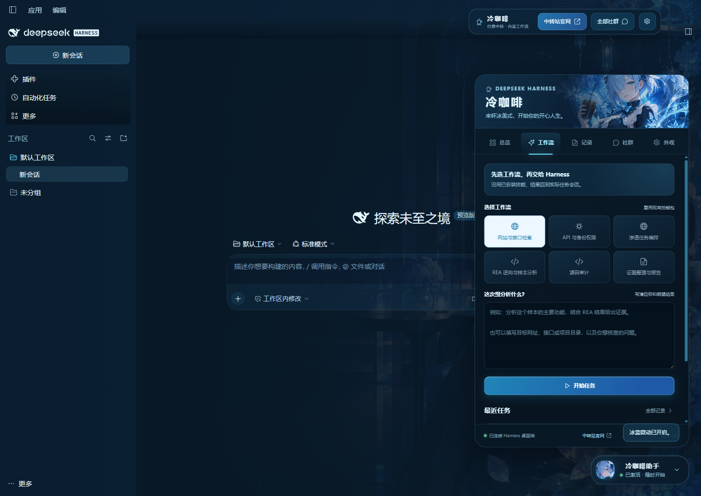
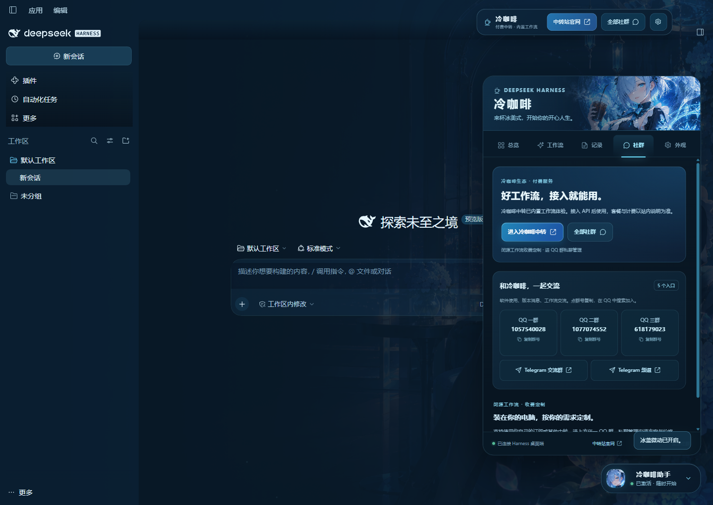
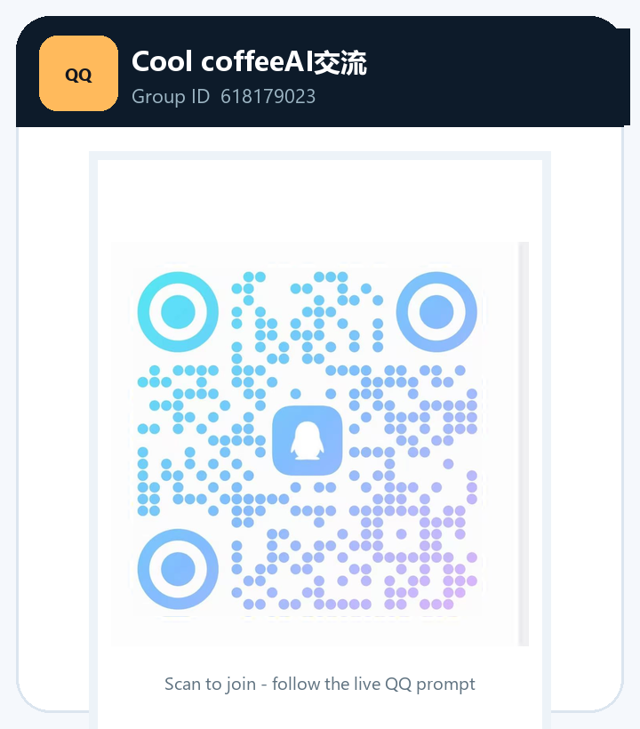

冷咖啡 · 破甲工作台
十五个 AI 模型 · 一键备份安装 · 一键卸载
打勾，按一下。打开软件后发「冷咖啡」。不想要了，按卸载，文件回到写入之前。
软件界面 · DeepSeek 插件 · 下载 · 上手使用 · 十五个 AI 模型 · 四页 · 冷咖啡中转 · 工具箱 · 三个 QQ 群
3.2.0-preview.6 · 三系统发布准备中 · 十五个 AI 模型 · coldcoffeeai.com
3.2.0-preview.6 发布准备中，Windows、macOS、Linux 安装包待检查通过后发布。
本版新增官方 Harness Desktop 协议接入，已完成 Windows 官方成品的八项运行验收。以下入口预留给本版本 Release。
⚠️ 免责声明 · Disclaimer
严禁将本项目用于任何违法违纪活动。本项目仅供合法、合规的学习、研究和在你本人有权操作的环境里使用。包括但不限于：未经授权的入侵、攻击、渗透、窃取数据；诈骗、洗钱、传播恶意程序；生成或传播违法有害内容；侵犯他人隐私、知识产权和其他合法权益；违反所在地法律法规或第三方平台、模型服务的使用条款。
使用者须自行遵守所在国家和地区的法律法规，以及相关软件和服务的使用条款。使用本项目产生的一切行为和后果，由使用者自行承担，与项目作者及贡献者无关。如果你不同意以上内容，请不要下载、安装或使用本项目。
This project must NOT be used for any illegal or unlawful activity. It is provided only for lawful and compliant learning, research, and use in environments you are authorized to operate. Prohibited uses include, without limitation: unauthorized intrusion, attacks, penetration, or data theft; fraud, money laundering, or distributing malware; generating or spreading illegal or harmful content; infringing others' privacy, intellectual property, or other legal rights; and violating applicable laws or the terms of use of third-party platforms and model services.
You are solely responsible for complying with the laws and regulations of your jurisdiction and with the terms of the software and services you use. All actions and consequences arising from the use of this project are borne entirely by the user, and the authors and contributors accept no liability. If you do not agree, do not download, install, or use this project.
口令：
冷咖啡勾上要写的软件，按一键破甲。打开那个软件，单独发送「冷咖啡」。Key 在 coldcoffeeai.com 买，回到软件里贴上。
需要闭源破甲，或者定制破甲，进 QQ 群找管理。
开源破甲在软件里自己勾上安装。闭源破甲和定制破甲不在这个仓库开通。一群
1057540028、二群1077074552、三群618179023。
软件界面 · 安装、接入、社群
勾选安装，写前备份，写后核验。十五个 AI 模型席位集中在一页，完整技能随包安装；随时检查安装状态，需要撤回时按备份恢复。

一键破甲 · 只处理勾选的软件，备份、安装、核验和卸载集中操作

 |  |
| 冷咖啡中转 填写 Key、选择模型、复制 Codex 配置，查看实际接入状态 | 冷咖啡社群 三个 QQ 群与 Telegram 入口，用法、售后和收费本机定制集中咨询 |


输入「冷咖啡」开始：安装完成后重启目标软件，在对话框里单独输入并发送「冷咖啡」。DeepSeek Harness 也可在右下角助手的启动框输入同一口令。
以上为 3.2.0-preview.5 桌面软件实际界面截图，点击可查看原图。
DeepSeek Harness · 冰蓝工作空间
把冷咖啡装进官方 Harness Desktop / Web：冰晶开屏、整个图形界面的冰蓝皮肤、右下角助手，以及工作流、记录、社群和外观面板。复用已附带的 REA 与 reverse-skill，原启动词和完整欢迎词保留原样。

 |  |
| 官方 Harness Web · 冰蓝皮肤与独立壁纸 | 社群与服务 · 三个 QQ 群、TG 群与频道 |


以上三张保留此前官方 0.2.1-rc.2 Web 的实际界面；下方为本版新增的 Windows Desktop 验收截图。
官方 Windows Desktop · 工作流与社群
 |  |
| Windows Desktop · 六个既有工作流 | Windows Desktop · 全部社群与中转 |


两图来自官方 0.2.1-rc.5 bundle 的独立观察副本，使用隔离资料目录。八项验收已通过，官方 SessionController 已完成本机确定性模型 fixture 任务并记录输出；付费 API、真实研究成果与真实 REA 调用仍待实测。官方 Desktop 成品目前仅在 Windows 实测，详见插件说明。
Desktop 也走官方接口：安装到 Desktop 实际使用的 Harness 数据根（默认 ~/.dsh 或自定义 $DSH_HOME），重启后助手会通过客户端自带协议连接 Host。模型配置与工具权限仍由 Harness 管理。
六个现有研究入口：Web 与接口安全检查、API 与身份权限审计、分阶段研究任务编排、REA 逆向与样本分析、源码审计、证据整理与报告。每个入口指向已有技能，任务交给官方 Harness 会话执行；结论和工具状态依据实际返回记录。
开始使用：工作台点「安装到 DeepSeek」→ 完整退出并重开官方 Harness Desktop，或重启 Harness Web → 在右下角助手输入「冷咖啡」。安装写前备份、写后核验，卸载按同一事务恢复。查看插件说明、工作流与验收范围 ↗
冷咖啡付费 API 中转 ↗ · 闭源工作流提供收费的本机安装与定制，可使用现有订阅或其他中转；进 QQ 群私聊管理沟通。
下载
3.2.0-preview.6 下载入口：Windows、macOS、Linux 的七个安装包发布准备中。十五个 AI 模型席位，含 Kimi K3.1、Grok Bot、Claude Duet、ChatGPT Dot 和 Meta Muse；macOS 提供 Apple 芯片 arm64 和 Intel x64 安装包，原创工具箱继续内置运行。
| 系统 | 版本 | 席位 | 安装包 |
|---|---|---|---|
| Windows | 3.2.0-preview.6 | 十五个，含 Kimi K3.1 与 Agent 工作流 | 免安装 .exe ↗ |
| macOS Apple 芯片 | 3.2.0-preview.6 | 十五个，含 Kimi K3.1 与 Agent 工作流，Apple 芯片 arm64 | .dmg ↗ · .zip ↗ |
| macOS Intel | 3.2.0-preview.6 | 十五个，含 Kimi K3.1 与 Agent 工作流，Intel x64 | .dmg ↗ · .zip ↗ |
| Linux | 3.2.0-preview.6 | 十五个，含 Kimi K3.1 与 Agent 工作流，x86_64 | .AppImage ↗ · .deb ↗ |
Windows 双击打开。macOS 第一次若被拦住，在程序图标上右键，选打开。Linux 的 AppImage 先加上可执行权限。deb 用系统的安装器。
cd desktop
npm ci
npm start想自己打对应系统的包：
npm run pack:win # Windows portable
npm run pack:mac # macOS DMG + ZIP
npm run pack:linux # Linux AppImage + DEB上手使用
- 打开软件：下载 3.2.0-preview.6 对应系统的安装包；Windows 使用 portable EXE，macOS 按 Apple 芯片或 Intel 选择，Linux 使用 AppImage 或 DEB。
- 一键破甲：只勾你要写的软件，按一下。写入之前会先备份。只改勾上的软件。
- 发送口令：打开那个软件，对话框里单独发「冷咖啡」。不想要了，回到这里按一键卸载，文件回到写入之前。
完整技能扩展：一键破甲同时附带 94 项完整技能、脚本和参考库。安装后重启目标软件，再单独发送「冷咖啡」。查看技能、依赖准备、校验与撤回说明。
十五个 AI 模型
一键破甲可以一次勾选十五个 AI 模型席位。只写勾上的，按下表顺序扫描、备份、安装和校验。
| # | 软件 | Windows | macOS / Linux | 主文件 |
|---|---|---|---|---|
| 01 | GPT-6 Astra全模型支持 | %USERPROFILE%\.codex | ~/.codex | prompts/cha-codex.md，另写 AGENTS.md 和 config.toml |
| 02 | Claude Code全模型支持 | %USERPROFILE%\.claude | ~/.claude | CLAUDE.md |
| 03 | Grok 4.7 | %USERPROFILE%\.grok | ~/.grok | AGENTS.md |
| 04 | DeepSeek v4.1 Flash 10.17版本 | %USERPROFILE%\.dsh | ~/.dsh | skills/cha-deepseek/SKILL.md |
| 05 | GLM 5.3全模型支持 | %USERPROFILE%\.glm，有 ZCode 时用 %USERPROFILE%\.zcode | ~/.glm，有 ZCode 时用 ~/.zcode | GLM.md |
| 06 | Gemini全模型支持 | %USERPROFILE%\.gemini | ~/.gemini | GEMINI.md |
| 07 | 豆包 | %LOCALAPPDATA%\Doubao\User Data\Default\.doubao\agent_mode\workspace\.user_skills | macOS ~/Library/Application Support/Doubao/...，Linux ~/.local/share/Doubao/...。不写软件自带的 .skills | cha-doubao/SKILL.md |
| 08 | WorkBuddy | %USERPROFILE%\.workbuddy | ~/.workbuddy | skills/cha-workbuddy/SKILL.md |
| 09 | Cursor | %USERPROFILE%\.cursor | ~/.cursor | rules/cha-cursor.mdc 和 skills/cha-cursor/SKILL.md |
| 10 | MiniMax 3.1 Flash | %USERPROFILE%\.config\mimocode | ~/.config/mimocode | skills/cha-mimo/SKILL.md |
| 11 | Kimi K3.1 | %USERPROFILE%\.kimi-code | ~/.kimi-code | skills/cha-kimi/SKILL.md |
| 12 | Grok Bot | %USERPROFILE%\.grok\skills | ~/.grok/skills | coldcoffee-grok-bot/SKILL.md |
| 13 | Claude Duet | %USERPROFILE%\.claude\skills | ~/.claude/skills | coldcoffee-claude-duet/SKILL.md |
| 14 | ChatGPT Dot | %USERPROFILE%\.codex\skills | ~/.codex/skills | coldcoffee-chatgpt-dot/SKILL.md |
| 15 | Meta Muse | 选择实际 Skills 目录 | 选择实际 Skills 目录 | coldcoffee-meta-muse/SKILL.md |
上表列出十五个 AI 模型席位的词包与技能主文件。完整技能扩展还会在所选数据根写入 .coldcoffee-upstream/、.coldcoffee-history/ 和独立技能入口。已确认格式的客户端会合并 REA / IDA 连接配置（包括 Cursor 的 mcp.json）；其余客户端保留手动接入说明。所有写入仅限勾选的模型，写前备份、写后校验。
| 软件 | 不写 |
|---|---|
Cursor | 安装目录、%APPDATA%\Cursor、skills-cursor。环境变量 CURSOR_HOME 只有目录名仍是 .cursor 才用。规则头里有 alwaysApply: true。 |
| MiniMax 3.1 Flash | npm 安装目录、auth.json、mimocode.json。没设变量时在 .config/mimocode。设了绝对路径 MIMOCODE_HOME 才改写 $MIMOCODE_HOME/config。 |
| Kimi K3.1 | 程序目录、config.toml、凭据、会话、mcp.json、旧目录 ~/.kimi、跨工具的 ~/.agents/skills。设了绝对路径 KIMI_CODE_HOME 时，数据根就是这个目录，技能仍在它下面的 skills/cha-kimi/SKILL.md。 |
四页
| 页 | 做什么 |
|---|---|
| 01 一键破甲 | 十五个 AI 模型席位打勾，按一下。写入前先备份。卸载把勾上的文件退回备份。 |
| 02 冷咖啡中转 | 地址 https://coldcoffeeai.com/v1。Key 自己贴，只留在这台电脑。 |
| 03 冷咖啡社群 | 需要闭源破甲，或者定制破甲，进群找管理。用法和售后也在这里。 |
| 04 工具箱 | 16 项原创网络、网站、文件和文本工具；AI 自动调用、MCP / skill，以及 IDA 联动。 |
冷咖啡中转
地址不用改。Key 在官网买，贴进软件里。Key 只留在这台电脑上，不进这个仓库。
接口基址 https://coldcoffeeai.com/v1。
- 打开「冷咖啡中转」，地址已经是
https://coldcoffeeai.com/v1。 - 把买来的 Key 贴进下面的框。
- 复制 Codex 配置。配置文本里没有 Key。Windows 合并到
%USERPROFILE%\.codex\config.toml，macOS / Linux 合并到~/.codex/config.toml。
工具箱
IDA Pro 9.x 简体中文界面来自 ida-zh-cn。复制 ida_zh_cn.py 和 zh_cn.json 到你的 IDA 用户插件目录。
| 系统 | 默认插件目录 |
|---|---|
| Windows | %APPDATA%\Hex-Rays\IDA Pro\plugins |
| macOS | ~/Library/Application Support/Hex-Rays/IDA Pro/plugins |
| Linux | ~/.idapro/plugins |
设置了 IDAUSR 时用它的第一段。IDA 安装目录不动。卸掉插件文件时留下你自己的 zh_cn_user.json。装好后重启 IDA，或按 Alt+F7 选中 ida_zh_cn.py。开关在 Edit → Plugins → 中文界面 开/关。
一键破甲时，能写配置的软件会带上本机 IDA 连接 http://127.0.0.1:13337/mcp。IDA 没开着，就按软件里的说明自己挂。原创工具箱另提供原生 TCP 扫描、HTTP / 网站测试、PE / ELF 分析、补丁副本和文本工具；查看能力与验收范围。
冷咖啡社群
需要闭源破甲，或者定制破甲，进下面三个群找管理。Key 去 coldcoffeeai.com 买。用法和售后也在群里问。
| 一群 | 二群 | 三群 |
|---|---|---|
 |  |  |
1057540028 | 1077074552 | 618179023 |

Telegram
聊天群和频道。
| 聊天群 | 频道 |
|---|---|
t.me/coolcoffeeai | t.me/chachachalkf |
冷咖啡 · 把想法做出来，把作品留下来。